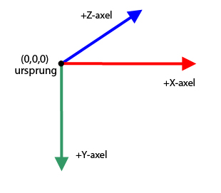
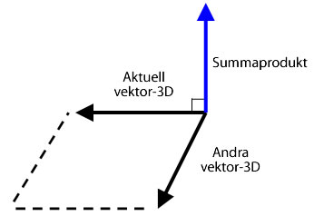

| Paket | flash.geom |
| Klass | public class Vector3D |
| Arv | Vector3D |
| Språkversion: | ActionScript 3.0 |
| Körningsmiljöversioner: | Flash Player 10, AIR 1.5 |
x-egenskapen den horisontella axeln och y-egenskapen den vertikala axeln. I det tredimensionella rummet visar z-egenskapen djupet. x-egenskapens värde ökar när objektet förflyttas åt höger. y-egenskapens värde ökar när objektet förflyttas nedåt. z-egenskapens värde ökar om objektet förflyttas bort ifrån vypunkten. Med perspektivprojektion och skalning ser objektet större ut när det är nära och mindre ut när det är längre bort ifrån skärmen. Som i ett högersidigt tredimensionellt koordinatsystem pekar den positiva z-axeln bort från betraktaren, och värdet på z-egenskapen ökar om objektet förflyttas bort från betraktaren. Nollpunkten (0,0,0) i det globala koordinatsystemet är scenens övre högra hörn.

Klassen Vector3D kan även representera en riktning, en pil som riktas från koordinaternas nollpunkt, till exempel (0,0,0) till en slutpunkt, eller en flyttalskomponent av en RGB-färgmodell (röd, grön, blå).
I kvaternion-orienteringen används ett fjärde element, w-egenskapen, som ger ytterligare orienteringsinformation. Till exempel kan w-egenskapen definiera en rotationsvinkel för ett Vector3D-objekt. Kombinationen av rotationsvinkel och koordinaterna x, y och z kan avgöra visningsobjektets orientering. Här är en representation av Vector3D-elementen med matrisnotation:

Relaterade API-element
 Dölj ärvda publika egenskaper
Dölj ärvda publika egenskaper Visa ärvda publika egenskaper
Visa ärvda publika egenskaper| Egenskap | Definieras med | ||
|---|---|---|---|
 | constructor : Object
En referens till klassobjektet eller konstruktorfunktionen för en given objektinstans. | Object | |
| length : Number [skrivskyddad]
Längden (storleken) på det aktuella Vector3D-objektet från nollpunkten (0,0,0) till objektets x-, y- och z-koordinater. | Vector3D | ||
| lengthSquared : Number [skrivskyddad]
Kvadraten på längden på det aktuella Vector3D-objektet beräknat med x-, y och z-egenskaperna. | Vector3D | ||
| w : Number
Vector3D-objektets fjärde element (förutom x-, y- och z-egenskaperna) kan innehålla data som till exempel rotationsvinkeln. | Vector3D | ||
| x : Number
Vector3D-objektets första element, till exempel x-koordinaten för en punkt i ett tredimensionellt rum. | Vector3D | ||
| y : Number
Vector3D-objektets andra element, till exempel y-koordinaten för en punkt i ett tredimensionellt rum. | Vector3D | ||
| z : Number
Vector3D-objektets tredje element, till exempel z-koordinaten för en punkt i ett tredimensionellt rum. | Vector3D | ||
| Metod | Definieras med | ||
|---|---|---|---|
Skapar en instans av ett Vector3D-objekt. | Vector3D | ||
Lägger till värdena på x-, y- och z-elementen för det aktuella Vector3D-objektet till värdena på x-, y- och z-elementen för ett annat Vector3D-objekt. | Vector3D | ||
[statisk]
Returnerar vinkeln i radianer mellan två vektorer. | Vector3D | ||
Returnerar ett nytt Vector3D-objekt som är en exakt kopia av det aktuella Vector3D-objektet. | Vector3D | ||
Kopierar alla vektordata från källans Vector3D-objekt till anropande Vector3D-objekt. | Vector3D | ||
Returnerar ett nytt Vector3D-objekt som är vinkelrätt mot det aktuella Vector3D-objektet och ytterligare ett Vector3D-objekt. | Vector3D | ||
Minskar värdet stegvis på x-, y- och z-elementen för det aktuella Vector3D-objektet. Minskas med värdena på x-, y- och z-elementen för ett specificerat Vector3D-objekt. | Vector3D | ||
[statisk]
Returnerar avståndet mellan två Vector3D-objekt. | Vector3D | ||
Om det aktuella Vector3D-objektet och det objekt som har specificerats som parameter är enhetshörnpunkter, returnerar metoden cosinus för vinkeln mellan två hörnpunkter. | Vector3D | ||
Avgör om två Vector3D-objekt är lika genom att jämföra x-, y- och z-elementen för det aktuella Vector3D-objektet med ett specificerat Vector3D-objekt. | Vector3D | ||
|
Anger om det finns en egenskap angiven för ett objekt. | Object | |
Ökar värdet stegvis på x-, y- och z-elementen för det aktuella Vector3D-objektet med värdena på x-, y- och z-elementen för ett specificerat Vector3D-objekt. | Vector3D | ||
|
Anger om en instans av klassen Object finns i prototypkedjan för objektet som anges som parameter. | Object | |
Jämför elementen för det aktuella Vector3D-objektet med elementen för ett specifikt Vector3D-objekt för att avgöra om de är nästan lika. | Vector3D | ||
Ändrar det aktuella Vector3D-objektet till dess motsats. | Vector3D | ||
Konverterar ett Vector3D-objekt till en enhetsvektor genom att dividera de tre första elementen (x, y, z) med vektorns längd. | Vector3D | ||
Dividerar värdet på x-, y- och z-egenskaperna för det aktuella Vector 3D-objektet med värdet på dess w-egenskap. | Vector3D | ||
|
Anger om den angivna egenskapen finns och är uppräkningsbar. | Object | |
Genomför skalning av det aktuella Vector3D-objektet med ett skalärt värde, en storlek. | Vector3D | ||
|
Anger tillgänglighet för en dynamisk egenskap för slingåtgärder. | Object | |
Tilldelar Vector3D-medlemmarna det angivna värdet
| Vector3D | ||
Subtraherar värdena på x-, y- och z-elementen för det aktuella Vector3D-objektet. Subtraheras från värdena på x-, y- och z-elementen för ett annat Vector3D-objekt. | Vector3D | ||
|
Returnerar det här objektets strängrepresentation, formaterad i enlighet med språkspecifika konventioner. | Object | |
Returnerar en strängrepresentation av det aktuella Vector3D-objektet. | Vector3D | ||
|
Returnerar det angivna objektets primitiva värde. | Object | |
| Konstant | Definieras med | ||
|---|---|---|---|
| X_AXIS : Vector3D [statisk]
X-axeln definieras som ett Vector3D-objekt med koordinaterna (1,0,0). | Vector3D | ||
| Y_AXIS : Vector3D [statisk]
Y-axeln definieras som ett Vector3D-objekt med koordinaterna (0,1,0). | Vector3D | ||
| Z_AXIS : Vector3D [statisk]
Z-axeln definieras som ett Vector3D-objekt med koordinaterna (0,0,1). | Vector3D | ||
length | egenskap |
length:Number [skrivskyddad] | Språkversion: | ActionScript 3.0 |
| Körningsmiljöversioner: | Flash Player 10, AIR 1.5 |
Längden (storleken) på det aktuella Vector3D-objektet från nollpunkten (0,0,0) till objektets x-, y- och z-koordinater. w-egenskapen ignoreras. En enhetsvektor har längden (storleken) ett.
Implementering
public function get length():NumberRelaterade API-element
lengthSquared | egenskap |
lengthSquared:Number [skrivskyddad] | Språkversion: | ActionScript 3.0 |
| Körningsmiljöversioner: | Flash Player 10, AIR 1.5 |
Kvadraten på längden på det aktuella Vector3D-objektet beräknat med x-, y- och z-egenskaperna. w-egenskapen ignoreras. Använd metoden lengthSquared() när det är möjligt, istället för att den långsammare metoden Math.sqrt() ska anropa metoden Vector3D.length().
Implementering
public function get lengthSquared():NumberRelaterade API-element
w | egenskap |
public var w:Number| Språkversion: | ActionScript 3.0 |
| Körningsmiljöversioner: | Flash Player 10, AIR 1.5 |
Vector3D-objektets fjärde element (förutom x-, y- och z-egenskaperna) kan innehålla data som till exempel rotationsvinkeln. Standardvärdet är 0.
I kvaternion-notation används en vinkel som fjärde element i beräkningen av den tredimensionella rotationen. w-egenskapen kan användas för att definiera Vector3D-objektets rotationsvinkel. Kombinationen av rotationsvinkeln och koordinaterna (x,y,z) avgör visningsobjektets orientering.
Dessutom kan w-egenskapen användas som en perspektivtänjningsfaktor för en projicerad tredimensionell position eller som ett projektionomformningsvärde för en tredimensionell koordinat som har projicerats i det tvådimensionella rummet. Till exempel kan du skapa en projektionsmatris med Matrix3D.rawData-egenskapen som när den används i ett Vector3D-objekt skapar ett omformningsvärde i Vector3D-objektets fjärde element (w-egenskapen). Genom att dividera Vector3D-objektets övriga element med omformningsvärdet skapas ett projicerat Vector3D-objekt. Med Vector3D.project()-metoden kan du dividera de tre första elementen av ett Vector3D-objekt med det fjärde elementet.
Relaterade API-element
x | egenskap |
public var x:Number| Språkversion: | ActionScript 3.0 |
| Körningsmiljöversioner: | Flash Player 10, AIR 1.5 |
Vector3D-objektets första element, till exempel x-koordinaten för en punkt i ett tredimensionellt rum. Standardvärdet är 0.
y | egenskap |
public var y:Number| Språkversion: | ActionScript 3.0 |
| Körningsmiljöversioner: | Flash Player 10, AIR 1.5 |
Vector3D-objektets andra element, till exempel y-koordinaten för en punkt i ett tredimensionellt rum. Standardvärdet är 0.
z | egenskap |
public var z:Number| Språkversion: | ActionScript 3.0 |
| Körningsmiljöversioner: | Flash Player 10, AIR 1.5 |
Vector3D-objektets tredje element, till exempel z-koordinaten för en punkt i ett tredimensionellt rum. Standardvärdet är 0.
Vector3D | () | Konstruktor |
public function Vector3D(x:Number = 0., y:Number = 0., z:Number = 0., w:Number = 0.)| Språkversion: | ActionScript 3.0 |
| Körningsmiljöversioner: | Flash Player 10, AIR 1.5 |
Skapar en instans av ett Vector3D-objekt. Om du inte anger någon parameter för konstruktorn skapas ett Vector3D-objekt med elementen (0,0,0,0).
Parametrarx:Number (default = 0.) | |
y:Number (default = 0.) | |
z:Number (default = 0.) | |
w:Number (default = 0.) |
add | () | metod |
public function add(a:Vector3D):Vector3D| Språkversion: | ActionScript 3.0 |
| Körningsmiljöversioner: | Flash Player 10, AIR 1.5 |
Lägger till värdena på x-, y- och z-elementen för det aktuella Vector3D-objektet till värdena på x-, y- och z-elementen för ett annat Vector3D-objekt. Metoden add() förändrar inte det aktuella Vector3D-objektet. Det returnerar istället ett nytt Vector3D-objekt med de nya värdena.
Två vektorer som läggs ihop kallas en resultantvektor. Du kan visualisera resultatet genom att rita en vektor från origo eller svansen på den första vektorn till änden eller huvudet på den andra vektorn. Resultantvektorn är avståndet mellan den första vektorns ursprung och den andra vektorns ände.

Parametrar
a:Vector3D — Ett Vector3D-objekt som ska läggas till det aktuella Vector3D-objektet.
|
Vector3D — Ett Vector3D-objekt som är resultatet av att det aktuella Vector3D-objektet har lagts till ett annat Vector3D-objekt.
|
Relaterade API-element
angleBetween | () | metod |
public static function angleBetween(a:Vector3D, b:Vector3D):Number| Språkversion: | ActionScript 3.0 |
| Körningsmiljöversioner: | Flash Player 10, AIR 1.5 |
Returnerar vinkeln i radianer mellan två vektorer. Den returnerade vinkeln är den minsta radianen som det första Vector3D-objektet roterar tills det går ihop med det andra Vector3D-objektet.
Metoden angleBetween() är en statisk metod. Den går att använda direkt som metod i Vector3D-klassen.
Använd följande formel för att konvertera en grad till en radian:
radian = Math.PI/180 * grad
Parametrar
a:Vector3D — Det första Vector3D-objektet.
| |
b:Vector3D — Det andra Vector3D-objektet.
|
Number — Vinkeln mellan två Vector3D-objekt.
|
clone | () | metod |
public function clone():Vector3D| Språkversion: | ActionScript 3.0 |
| Körningsmiljöversioner: | Flash Player 10, AIR 1.5 |
Returnerar ett nytt Vector3D-objekt som är en exakt kopia av det aktuella Vector3D-objektet.
ReturnerarVector3D — Ett nytt Vector3D-objekt som är en exakt kopia av det aktuella Vector3D-objektet.
|
copyFrom | () | metod |
public function copyFrom(sourceVector3D:Vector3D):void| Språkversion: | ActionScript 3.0 |
| Körningsmiljöversioner: | Flash Player 11, AIR 3.0, Flash Lite 4 |
Kopierar alla vektordata från källans Vector3D-objekt till anropande Vector3D-objekt.
Parametrar
sourceVector3D:Vector3D — Vector3D-objekt varifrån data kopieras.
|
crossProduct | () | metod |
public function crossProduct(a:Vector3D):Vector3D| Språkversion: | ActionScript 3.0 |
| Körningsmiljöversioner: | Flash Player 10, AIR 1.5 |
Returnerar ett nytt Vector3D-objekt som är vinkelrätt mot det aktuella Vector3D-objektet och ytterligare ett Vector3D-objekt. Om det returnerade Vector3D-objektets koordinater är (0,0,0), är de två Vector3D-objekten parallella med varandra.

Du kan använda den normaliserade summaprodukten av två hörnpunkter på en polygonyta tillsammans med den normaliserade vektorn för kamerans eller ögats vypunkt, för att få fram en punktprodukt. Värdet på punktprodukten kan avgöra om ytan på ett tredimensionellt objekt inte syns från vypunkten.
Parametrar
a:Vector3D — Ett andra Vector3D-objekt
|
Vector3D — Ett nytt Vector3D-objekt som är vinkelrätt mot det aktuella Vector3D-objektet och Vector3D-objektet som har angetts som parameter.
|
Relaterade API-element
decrementBy | () | metod |
public function decrementBy(a:Vector3D):void| Språkversion: | ActionScript 3.0 |
| Körningsmiljöversioner: | Flash Player 10, AIR 1.5 |
Minskar värdet stegvis på x-, y- och z-elementen för det aktuella Vector3D-objektet. Minskas med värdena på x-, y- och z-elementen för ett specificerat Vector3D-objekt. Till skillnad från Vector3D.subtract()-metoden ändrar decrementBy()-metoden det aktuella Vector3D-objektet och returnerar inte något nytt Vector3D-objekt.
Parametrar
a:Vector3D — Vector3D-objektet som innehåller värden som dras ifrån det aktuella Vector3D-objektet.
|
Relaterade API-element
distance | () | metod |
public static function distance(pt1:Vector3D, pt2:Vector3D):Number| Språkversion: | ActionScript 3.0 |
| Körningsmiljöversioner: | Flash Player 10, AIR 1.5 |
Returnerar avståndet mellan två Vector3D-objekt. Metoden distance() är en statisk metod. Du kan använda den direkt som en metod för Vector 3D-klassen för att få fram det euklidiska avståndet mellan två tredimensionella punkter.
Parametrar
pt1:Vector3D — Ett Vector 3D-objekt som den första tredimensionella punkten.
| |
pt2:Vector3D — Ett Vector 3D-objekt som den andra tredimensionella punkten.
|
Number — Avståndet mellan två Vector3D-objekt.
|
dotProduct | () | metod |
public function dotProduct(a:Vector3D):Number| Språkversion: | ActionScript 3.0 |
| Körningsmiljöversioner: | Flash Player 10, AIR 1.5 |
Om det aktuella Vector3D-objektet och det objekt som har specificerats som parameter är enhetshörnpunkter, returnerar metoden cosinus för vinkeln mellan två hörnpunkter. Enhetshörnpunkter är hörnpunkter som riktas i samma riktning men vilkas längd är ett. De tar bort faktorn längd ur resultatet. Du kan använda metoden normalize() för att konvertera en vektor till en enhetsvektor.
Med metoden dotProduct() hittar du vinkeln mellan två hörnpunkter. Den används också vid backface culling och ljusberäkningar. Backface culling är en procedur för att avgöra vilken yta som är dold för vypunkten. Du kan använda de normaliserade hörnpunkterna från kamerans eller ögats vypunkt tillsammans med summaprodukten av hörnpunkterna i en polygonyta för att få fram punktprodukten. Om punktprodukten är mindre än noll är ytan riktad mot kameran eller betraktaren. Om de två enhetshörnpunkterna är vinkelräta mot varandra är de ortogonala och punktprodukten är noll. Om de två hörnpunkterna är parallella med varandra är punktprodukten ett.
Parametrar
a:Vector3D — Det andra Vector3D-objektet.
|
Number — Ett skalärt värde som är punktprodukten av det aktuella Vector3D-objeket och det specificerade Vector3D-objektet.
|
Relaterade API-element
equals | () | metod |
public function equals(toCompare:Vector3D, allFour:Boolean = false):Boolean| Språkversion: | ActionScript 3.0 |
| Körningsmiljöversioner: | Flash Player 10, AIR 1.5 |
Avgör om två Vector3D-objekt är lika genom att jämföra x-, y- och z-elementen för det aktuella Vector3D-objektet med ett specificerat Vector3D-objekt. Om värdena för dessa två element är samma är de två Vector3D-objekten lika. Om den andra valfria parametern är angiven till true jämförs alla fyra elementen för Vector3D-objekten, inklusive w-egenskapen.
Parametrar
toCompare:Vector3D — Vector3D-objektet som ska jämföras med det aktuella Vector3D-objektet.
| |
allFour:Boolean (default = false)w-egenskap används i jämförelsen.
|
Boolean — Värdet true om det specificerade Vector3D-objektet är lika med det aktuella Vector3D-objektet, och false om de inte är lika.
|
Relaterade API-element
incrementBy | () | metod |
public function incrementBy(a:Vector3D):void| Språkversion: | ActionScript 3.0 |
| Körningsmiljöversioner: | Flash Player 10, AIR 1.5 |
Ökar värdet stegvis på x-, y- och z-elementen för det aktuella Vector3D-objektet med värdena på x-, y- och z-elementen för ett specificerat Vector3D-objekt. Till skillnad från metoden Vector3D.add()-metoden ändrar metoden incrementBy() det aktuella Vector3D-objektet och returnerar inte något nytt Vector3D-objekt.
Parametrar
a:Vector3D — Vector3D-objektet som ska läggas till det aktuella Vector3D-objektet.
|
Relaterade API-element
nearEquals | () | metod |
public function nearEquals(toCompare:Vector3D, tolerance:Number, allFour:Boolean = false):Boolean| Språkversion: | ActionScript 3.0 |
| Körningsmiljöversioner: | Flash Player 10, AIR 1.5 |
Jämför elementen för det aktuella Vector3D-objektet med elementen för ett specifikt Vector3D-objekt för att avgöra om de är nästan lika. De två Vector3D-objekten är nästan lika om värdet på alla elementen för de två hörnpunkterna är lika, eller om resultatet av jämförelsen är inom toleransintervallet. Skillnaden mellan två element måste vara mindre än den siffra som har specificerats som tolerance-parameter. Om den tredje valfria parametern är angiven till true jämförs alla fyra elementen för Vector3D-objekten, inklusive w-egenskapen. Annars inkluderas endast x-, y-, och z-elementen i jämförelsen.
Parametrar
toCompare:Vector3D — Vector3D-objektet som ska jämföras med det aktuella Vector3D-objektet.
| |
tolerance:Number — En siffra som avgör toleransfaktorn. Om skillnaden mellan värdena på de båda Vector3D-elementen som har angetts i parametern toCompare och det aktuella Vector3D-elementet är mindre än toleranssiffran anses de båda värdena vara nästan lika.
| |
allFour:Boolean (default = false)w-egenskap används i jämförelsen.
|
Boolean — Värdet true om det specificerade Vector3D-objektet är nästan lika med det aktuella Vector3D-objektet, och false om de inte är lika.
|
Relaterade API-element
negate | () | metod |
public function negate():void| Språkversion: | ActionScript 3.0 |
| Körningsmiljöversioner: | Flash Player 10, AIR 1.5 |
Ändrar det aktuella Vector3D-objektet till dess motsats. Det motsatta objektet ses även som motsats till det ursprungliga objektet. Värdet på x-, y- och z-egenskaperna för det aktuella Vector3D-objektet ändras till -x, -y och -z.
normalize | () | metod |
public function normalize():Number| Språkversion: | ActionScript 3.0 |
| Körningsmiljöversioner: | Flash Player 10, AIR 1.5 |
Konverterar ett Vector3D-objekt till en enhetsvektor genom att dividera de tre första elementen (x, y, z) med vektorns längd. Enhetshörnpunkter är hörnpunkter som har en riktning men vilkas längd är ett. De förenklar vektorberäkningar genom att längd tas bort som faktor.
ReturnerarNumber — Det aktuella Vector3D-objektets längd.
|
project | () | metod |
public function project():void| Språkversion: | ActionScript 3.0 |
| Körningsmiljöversioner: | Flash Player 10, AIR 1.5 |
Dividerar värdet på x-, y- och z-egenskaperna för det aktuella Vector 3D-objektet med värdet på dess w-egenskap.
Om det aktuella Vector3D-objektet är resultatet av att ett Vector3D-objekt har multiplicerats med ett Matrix3D projektionsobjekt kan w-egenskapen innehålla omformningsvärdet. Metoden project() kan slutföra projektionen genom att dividera elementen med w-egenskapen. Använd Matrix3D.rawData-egenskapen för att skapa ett Matrix3D projektionsobjekt.
scaleBy | () | metod |
public function scaleBy(s:Number):void| Språkversion: | ActionScript 3.0 |
| Körningsmiljöversioner: | Flash Player 10, AIR 1.5 |
Genomför skalning av det aktuella Vector3D-objektet med ett skalärt värde, en storlek. Vector3D-objektets x-, y- och z-element multpliceras med det skalära numret som har angetts i parametern. Om till exempel en vektor skalas med tio blir resultatet en vektor som är tio gånger längre. Skalningsvärdet kan även ändra riktning på vektorn. Genom att multiplicera vektorn med ett negativt nummer byter den riktning.
Parametrar
s:Number — En multiplikator (skalär) används för att ändra storlek på ett Vector3D-objekt.
|
setTo | () | metod |
subtract | () | metod |
public function subtract(a:Vector3D):Vector3D| Språkversion: | ActionScript 3.0 |
| Körningsmiljöversioner: | Flash Player 10, AIR 1.5 |
Subtraherar värdena på x-, y- och z-elementen för det aktuella Vector3D-objektet. Subtraheras från värdena på x-, y- och z-elementen för ett annat Vector3D-objekt. Metoden subtract() ändrar inte det aktuella Vector3D-objektet. Istället returneras ett nytt Vector3D-objekt med de nya värdena.
Parametrar
a:Vector3D — Det Vector3D-objekt som ska dras ifrån det aktuella Vector3D-objektet.
|
Vector3D — Ett nytt Vector3D-objekt som utgörs av skillnaden mellan det aktuella Vector3D-objektet och det angivna Vector3D-objektet.
|
Relaterade API-element
toString | () | metod |
public function toString():String| Språkversion: | ActionScript 3.0 |
| Körningsmiljöversioner: | Flash Player 10, AIR 1.5 |
Returnerar en strängrepresentation av det aktuella Vector3D-objektet. Strängen innehåller värdena på x-, y- och z-egenskaperna.
String — En sträng som innehåller värdena på x-, y- och z-egenskaperna.
|
X_AXIS | Konstant |
public static const X_AXIS:Vector3D| Språkversion: | ActionScript 3.0 |
| Körningsmiljöversioner: | Flash Player 10, AIR 1.5 |
X-axeln definieras som ett Vector3D-objekt med koordinaterna (1,0,0).
Y_AXIS | Konstant |
public static const Y_AXIS:Vector3D| Språkversion: | ActionScript 3.0 |
| Körningsmiljöversioner: | Flash Player 10, AIR 1.5 |
Y-axeln definieras som ett Vector3D-objekt med koordinaterna (0,1,0).
Z_AXIS | Konstant |
public static const Z_AXIS:Vector3D| Språkversion: | ActionScript 3.0 |
| Körningsmiljöversioner: | Flash Player 10, AIR 1.5 |
Z-axeln definieras som ett Vector3D-objekt med koordinaterna (0,0,1).
Tue Jun 12 2018, 01:40 PM Z